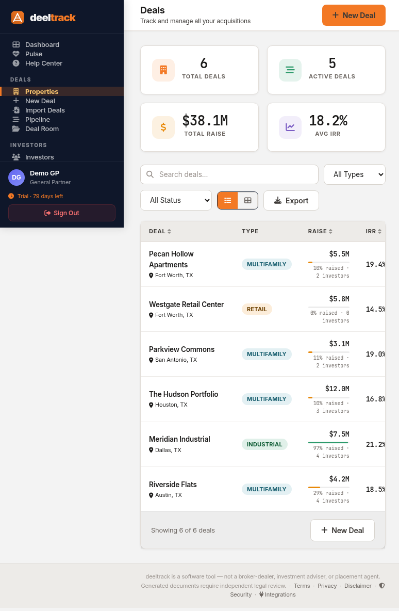
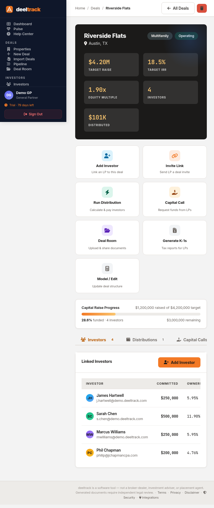

Deal Management: From LOI to Exit in One Dashboard

A syndication deal is a living thing. It starts as an LOI, moves through due diligence, enters fundraising, closes, operates for years, and eventually exits. At every stage, there's data to track: investors, commitments, documents, distributions, capital accounts, compliance requirements.
Most sponsors track this across a constellation of tools — a CRM here, spreadsheets there, a shared Drive folder, a separate investor portal. deeltrack consolidates all of it into a single deal profile.
The Deal Lifecycle
Every deal in deeltrack follows a natural progression through status stages:
You can move deals between stages at any time. Each status change is visible on the deals dashboard, and Pulse will flag deals that seem stuck (like an LOI sitting for 90+ days).
The Deal Profile
Click into any deal and you see everything about it in one place:

Deal detail for a multifamily property — investors, commitments, financials, and actions all in one view.Property Details
- Property name, location, and type (multifamily, industrial, retail, etc.)
- Total equity/raise target and current committed amount
- Projected IRR and equity multiple
- Preferred return rate and GP promote structure
- Entity name and deal status
Investor Table
Every investor linked to the deal, with their commitment amount, ownership percentage, and status. You can add or remove investors directly from the deal profile — no need to navigate elsewhere.
Financial Summary
- Total raised vs. target (with progress bar)
- Total distributions posted
- Capital account balances per investor
- Pref return accrual status
Quick Actions
From the deal detail page, you can:
- Generate an Operating Agreement from the deal terms
- Calculate and post a distribution
- Issue a capital call
- Upload documents to the deal room
- Send an investor update
- Run AI analysis (underwriting check, deal comparison, DD checklist)
Everything is one click away from the deal profile — no hunting through menus or separate modules.
The Deals Dashboard
The main deals page shows your entire portfolio in a table view:
- Deal name and location
- Property type — filterable
- Raise progress — amount raised, percentage, and LP count
- Projected IRR
- Status — color-coded pipeline stage
You can search, filter by type or status, and the filters sync to the URL — so you can bookmark a filtered view or share it with a colleague.
The dashboard also shows your portfolio composition — how many deals by property type, total AUM, and aggregate investor count. This is the view you pull up when an LP asks "What does your portfolio look like?"
Creating a New Deal
The new deal wizard walks you through entering the essential information:
- Property details — name, location, type, units/sq ft
- Financial terms — equity target, pref rate, promote structure, projected IRR
- Entity information — LLC name, formation state
- Investors — link existing investors with commitment amounts
You don't need to fill in everything upfront. Start with the basics at the LOI stage and add details as the deal progresses. deeltrack doesn't force you into a rigid workflow — it adapts to how deals actually move.
Deal Import
Already have deals in spreadsheets? The deal import tool lets you upload a CSV and map columns to deeltrack fields. This is particularly useful when migrating from another platform — you don't have to re-enter everything manually.
Pipeline View
For sponsors actively sourcing deals, the pipeline view shows your acquisition pipeline as a Kanban board — deals organized by stage with deal scoring to help prioritize.
The pipeline is separate from your active portfolio. Think of it as your sourcing CRM: track leads, score opportunities, and move winners into your deal portfolio when they close.
What Connects to What
The power of deal management in deeltrack isn't any single feature — it's how everything connects:
- Link an investor to a deal → they appear in the deal's investor table AND in the investor CRM's deal history
- Post a distribution for a deal → it updates every linked investor's capital account automatically
- Upload a document to the deal room → it's visible to LPs in their portal
- Generate a K-1 for a deal → it's automatically sortable and downloadable by the right investors
No manual syncing. No copying data between tools. Change it in one place, it's updated everywhere.
One deal. One profile. Everything connected.
$49/deal/month. All features included. No AUM fees.
Get Started Free →